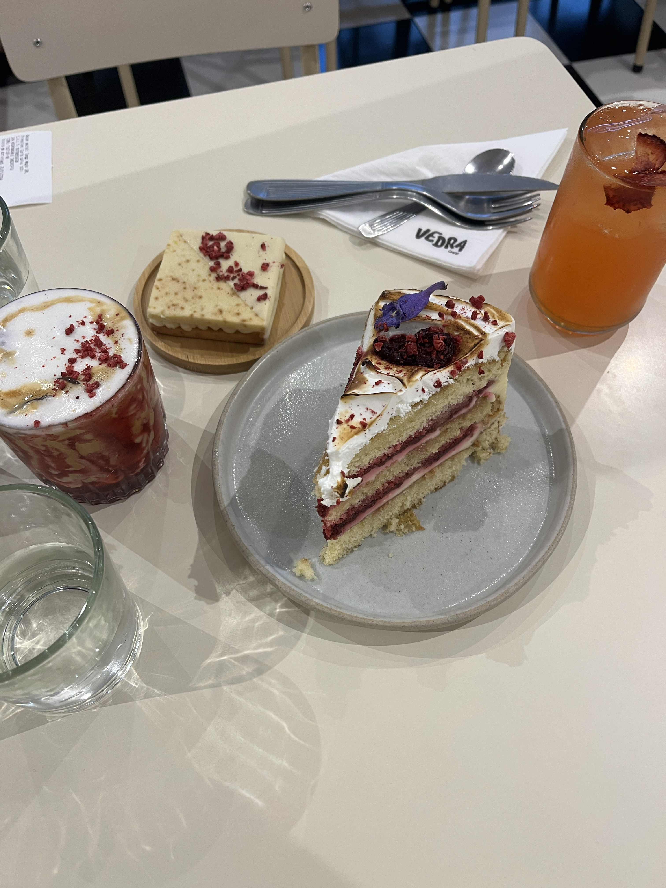
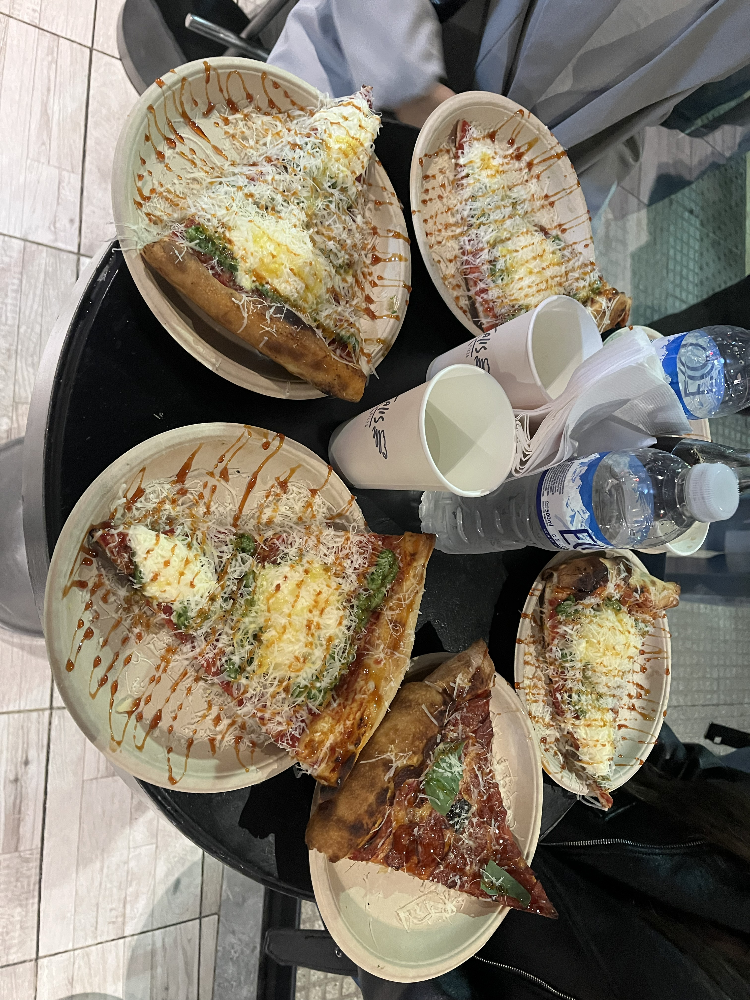
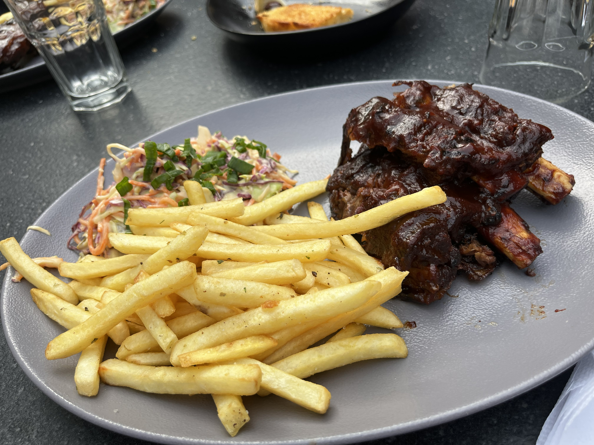

Cafeterías & Meriendas
Rituales de café de especialidad, espacios de lectura y repostería artesanal en rincones tranquilos.
Explorar RecorridoUn recorrido gastronómico visual y narrativo por CABA guiado por vivencias personales y fotografías 100% reales.

Rituales de café de especialidad, espacios de lectura y repostería artesanal en rincones tranquilos.
Explorar Recorrido
La tradición culinaria porteña: platos abundantes, cocina casera y calidez de barrio.
Explorar Recorrido
Comida rápida artesanal que va desde Pizzas estilo NY, a hamburguesas con técnica smash, pan de elaboración propia y espíritu urbano.
Explorar RecorridoCoctelería de autor, rooftops con vistas a la ciudad y barras rodeadas de vegetación.
Explorar Recorrido
Sabores del mundo: sushi contemporáneo, pastas europeas, pizzas NY y experiencias temáticas.
Explorar RecorridoLocalizá todos los puntos gastronómicos en CABA y GBA para organizar tu propia ruta.